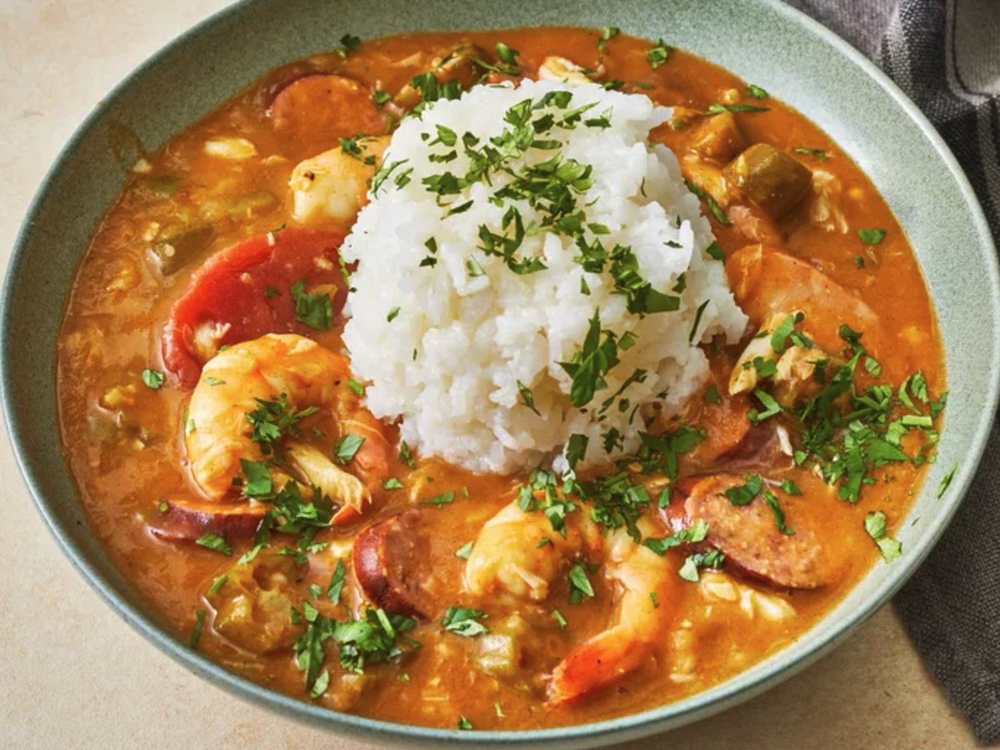

New Orleans Creole Gumbo Recipe

I am going to give you my Creole gumbo recipe.
I learned to cook from my mother and grandmother who were born and raised
in New Orleans and really knew how to cook. Most of the time, you could not
get them to write down their recipes because they used a "pinch" of this and
"just enough of that" and so on. This recipe is a combination of both of their
recipes which I have added to over the years. Serve over hot cooked rice.
Ingredients
- 1 cup all purpose flour
- 1 cup coarsely chopped celery
- 3 quarts water
- 6 cubes beef bouillon
- 1 tablespoon white sugar
- 1/2 teaspoon cajun seasoning blend (such as Tony Chachere's) or to taste
- 4 bay leaves
- 1/2 teaspoon dried thyme leaves
- 1 6oz can of tomato sauce
Steps
- Gather all ingredients.
- Make the roux: Whisk together flour and 3/4 cup bacon drippings in a large, heavy saucepan over medium-low heat until smooth. Cook roux, whisking constantly, until it turns a rich mahogany brown color. This can take 20 to 30 minutes; watch heat carefully and whisk constantly or roux will burn. Remove from heat; continue whisking until mixture stops cooking.
- Make the gumbo: Place celery, onion, green bell pepper, and garlic into the work bowl of a food processor, and pulse until all vegetables are very finely chopped.
- Stir vegetables into roux, and mix in sliced sausage. Cook over medium-low heat, stirring constantly, until vegetables are tender, 10 to 15 minutes. Remove from heat and set aside.
- Combine water and beef bouillon cubes in a large Dutch oven or soup pot and bring to a boil over medium-high heat. Stir until bouillon cubes dissolve, then whisk roux mixture into the boiling water.
- Reduce heat to a simmer and mix in sugar, salt, hot pepper sauce, Cajun seasoning, bay leaves, thyme, stewed tomatoes, and tomato sauce. Simmer soup over low heat for 1 hour; mix in 2 teaspoons of file gumbo powder at the 45-minute mark.
- Meanwhile, melt 2 tablespoons bacon drippings in a skillet over medium heat. Add okra and vinegar and cook for 15 minutes; remove okra with a slotted spoon, and stir into the simmering gumbo.
Home